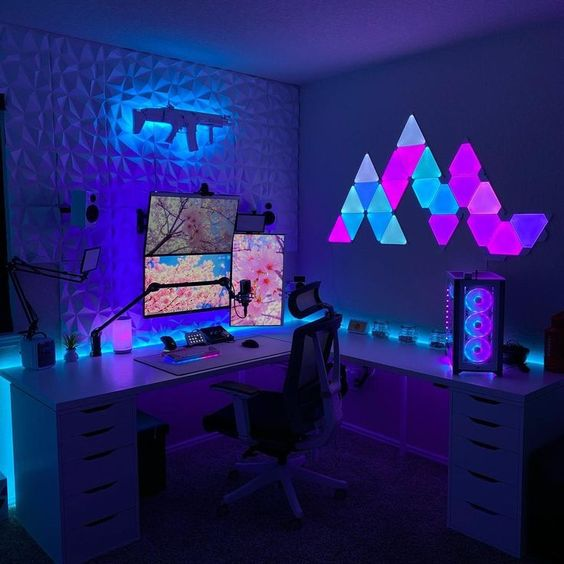
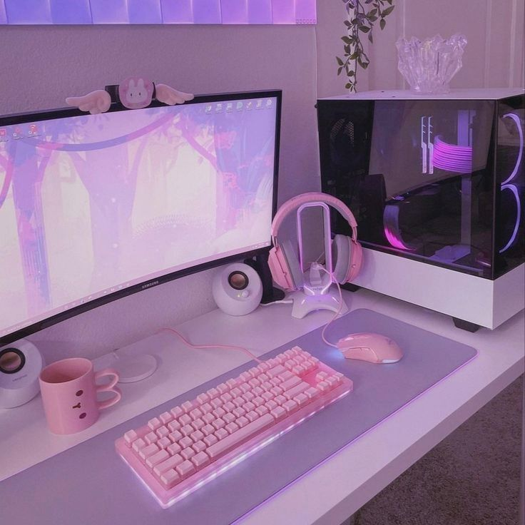
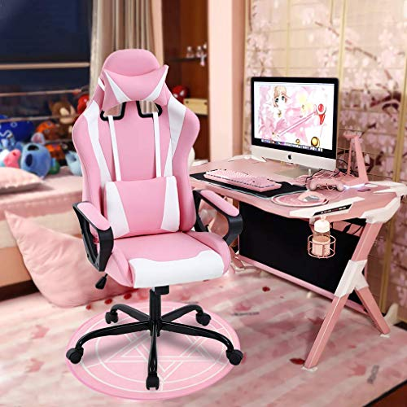

<?xml version="1.0" encoding="UTF-8"?>
<!DOCTYPE html PUBLIC "-//W3C//DTD XHTML 1.0 Transitional//EN" "http://www.w3.org/TR/xhtml1/DTD/xhtml1-transitional.dtd">
<html>
    </html>
    <head>
        <meta name="viewport" content="width=device-width, initial-scale=1">
        <link rel="stylesheet" href="https://maxcdn.bootstrapcdn.com/bootstrap/3.4.1/css/bootstrap.min.css">
        <script src="https://ajax.googleapis.com/ajax/libs/jquery/3.6.4/jquery.min.js"></script>
        <script src="https://maxcdn.bootstrapcdn.com/bootstrap/3.4.1/js/bootstrap.min.js"></script>
        <link href="master.css" rel="stylesheet" type="text/css" />
    </head>
    <body>
      <nav class="navbar navbar-inverse">
        <div class="container-fluid" style = "max-width: fit-content;">
          <div class="navbar-header" style="border-style: double; border-color:  #fa4df1; border-width: 5px;">
            <a class="navbar-brand" href="#"style="font-family: fantasy; color: #fa4df1; margin-left: 5px;">Meet the Players</a>
          </div>
          <ul class="nav navbar-nav">
            <li><a href="index.html" style="font-family: monospace; color: #97DEFF; border-style: double; border-color: #d3b5ff; border-width: 5px;">Home</a></li>
            
            <li><a href="profiles.html" style="font-family: monospace; color: #97DEFF; border-style: double; border-color: #d3b5ff; border-width: 5px;">Profiles</a></li>
            <li><a href="playlists.html" style="font-family: monospace; color: #97DEFF; border-style: double; border-color: #d3b5ff; border-width: 5px;">Playlists</a></li>
            <li class="active"><a href="setup.html" style="font-family: monospace; color: #97DEFF; border-style: double; border-color: #d3b5ff; border-width: 5px;">Setups</a></li>
          </ul>
        </div>
      </nav> 

      <h1 class="setuptitle">Setup Highlights</h1>
    <div class="flex-row">

      <div id="setupcol1">
        
        <p class="setupheader">Alina's Monitors</p>
        <p class="setupbio">@SparkleGirl23Xx
          <br>
          My favorite part of my setup is my monitors, which make it easier for me to stream on Twitch because I can see the chat :)))</p>
      </div>

      <div id="setupcol2">
        
        <p class="setupheader2">Gigi's Keyboard</p>
        <p class="setupbio"> @XxShadowXSonicxX
          <br>
          I built this keyboard myself, so it's basically my child now. I chose pink because it's my favorite color😘😎</p>
      </div>
        
      <div id="setupcol3">
        
        <p class="setupheader">Mahi's Gaming Chair</h2>
        <p class="setupbio">@KittyKat325
          <br>
          This is literally my most prized possesion. I spend so much time in this chair and I'm obsessed with the colors.</p>
      </div>
    </div>

    </body>
        </html>